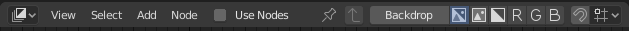

简介¶
不同的节点编辑器可用于不同的工作流中使用，每个节点编辑器都有特别的用途。所以，这节只讲通用节点是如何工作的。在下面的列表中展示了不同类型的节点树与他们的文档的位置。

节点编辑器示例。
| 图标 | 名称 | 文档 |
|---|---|---|
| 着色节点 | 文档在 渲染 章节里. | |
| 合成节点 | 文档可以在 合成 章节里找到。 | |
| 纹理节点 | 纹理节点覆盖在 UV编辑器 的文档里。 |
编辑器界面¶
标题栏¶
标题栏 包含一系列的菜单，按钮和选项，部分是基于当前节点树类型而定的。

常用节点编辑器标题栏选项。
- 视图
- 这个菜单可以更改编辑器的视图。
- 选择
- 这个菜单可以选择或者成组一些节点。
- 添加
- 这个菜单用于添加节点。
- 节点
- 这个菜单用于操作选择的节点。
- 使用节点
- 当渲染引擎计算材质色和渲染最终图时，确定是否使用使用节点树。如果不勾选，将忽略节点材质。对于材质来说，这基本是遗留选项，因为在以前无法使用节点树合成材质。
- 使用固定
- 启用后，编辑器将保留材质或纹理编辑状态，即使用户选择其他对象也是如此。 然后可以独立于3D视图中的对象选择来编辑节点树。
- 返回父节点按钮
- 这个按钮可以返回父节点比如离开节点组时。
- 吸附
- 更改吸附节点位置的选项以实现更清晰的节点树布局。
工具栏¶
工具栏 包含使用节点的一些工具。
侧栏¶
侧栏 区块包含当前选择节点在节点编辑器中尽可能有用的设置属性。